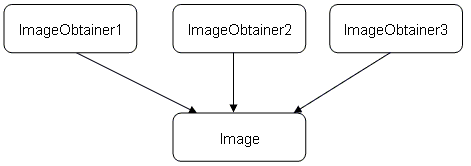

A drawable object has the following characteristics:
The TextLine represents a text aligned into a line, which may have a custom font, textformat and color.
The class AnimatedTextLine extends the class TextLine with the ability of text-scrolling, if the text does not fit into the given width.
The TextBox represents a text aligned into a box, where an automatic wrapping of the text is done. The text may have a custom font, textformat and color. Note that if the text is too long to fit into the box, the text will be clipped at the bottom. If a scrollbar is needed and hence also an interaction with the user, the controls TextList or MultiLineEditor (used in read-only-mode) should be used.
The ProgressBar indicates a percentual progress. The look may be adjusted by writing an own view as part of a theme. An available reference-implementation is available under Apoxi/GlobalThemes/DefaultTheme/DefaultProgressBarView.*
Indicates the position of a range, which is partly visible. The range is defined by a minimum value and a maximum value, the current position by a value. Additionally it must be defined, how many values can be visible. A position-indicator can be aligned horizontal or vertical.
The look may be adjusted by writing an own view as part of a theme. An available reference-implementation is available under:
An ImageBox contains any kind of image represented either by a bitmap-resource or an image-obtainer. A bitmap-resource is implemented by BitmapRes, an image-obtainer by the class ImageObtainer. It is strongly recommended to use the image box for displaying images, as if necessary the image box is capable of decoding the images in a separate thread. This assures that the application is not blocked during the decoding of an image.
A bitmap-resource represents an internal bitmap of APOXI. Every bitmap-resource is organized in the same way as the display. This allows a very fast drawing but has the drawback of needing more memory than e. g. a JPEG-image. All bitmap-resources are generated by the APOXI-tool Resource-Compiler. See APOXI_Tools_ResourceCompiler.pdf for more details.
Example: A bitmap-resource is added to an image-box.
MyWindow.hpp
class MyWindow : public Window {
typedef Window Base;
public:
void Init();
private:
ImageBox m_image_box;
};
MyWindow.cpp:
#include <Config/Resources/img1.hpp>
void MyWindow::Init()
{
Base::Init();
m_image_box.Init(this, &img1);
}
An image-obtainer may contain any instance of the class Image, which is the base for e. g. JPEG-images and GIF-images. An image-obtainer does a reference-counting, hence when all image-obtainers referring to one instance of an image are destructed and the image-obtainer has been initialized to obtain a disposable image, the image itself will get deleted too:

Example 1: An animation is added to an image-box. The delay between the frames is set to 200 milliseconds in this example.
MyWindow.hpp
class MyWindow : public Window {
typedef Window Base;
public:
void Init();
private:
NativeImage m_native_img;
ImageBox m_image_box;
};
MyWindow.cpp:
#include <Config/Resources/img1.hpp> // bitmap-resource 1
#include <Config/Resources/img2.hpp> // bitmap-resource 2
#include <Config/Resources/img3.hpp> // bitmap-resource 3
const BitmapRes* const c_img_anim[] = { &img1, &img2, &img3 };
void MyWindow::Init()
{
Base::Init();
m_native_img.Init(c_img_anim, 3, 200);
m_image_box.Init(this, ImageObtainer(&m_native_img));
}
Example 2: A JPEG-image is added to an image-box. A JPEG-image reads from a binary data stream, which is explained in detail in the next chapter.
MyWindow.hpp
class MyWindow : public Window {
typedef Window Base;
public:
void Init();
private:
JpegImage m_jpeg_img;
ImageBox m_image_box;
};
MyWindow.cpp:
void MyWindow::Init()
{
Base::Init();
// c_jpeg-data must point to a buffer containing the jpeg-data,
// c_data_length provides the length of the data in bytes
const RamData* ram_data = RamData::CreateInstance(c_jpeg_data, c_data_length);
m_jpeg_img.Init(ram_data);
m_image_box.Init(this, ImageObtainer(&m_jpeg_img));
}
As the examples show it is recommended to allocate an image-obtainer on the stack, because there is no need to keep the image-obtainer alive after passing it to an object which is responsible for the image.
An image box offers the possibility to buffer images and animations for performance reasons. If an animation can not be buffered completely, the image box automatically tries to buffer at least two frames, which are necessary to display all kind of animations correctly. This means that the animation is decoded synchronously which might lead to a less responsive GUI. But also in this case it is always possible to interrupt the decoding at any time.
The JPEG-image and most other image classes may read the data of the image from a binary data stream, represented by the class BinData.
BinData defines an interface to access binary data in a way that releases the user from memory management. Usually an instance is created from one class but handled and obtained from another class. Therefor instances may not be constructed directly using a constructor. Any derived class provides a static method CreateInstance(…) to create an instance:
const RamData* ram_data = RamData::CreateInstance(c_jpeg_data, c_data_length);
Per default APOXI offers the following kind of binary data:
Usually applications like WAP and JAVA use a synchronous drawing mechanism (for the difference between synchronous drawing and asynchronous drawing have a look at chapter 7.3). The image-box draws itself in an asynchronous way, which makes it necessary to take care about some issues when the application does the drawing in a synchronous way.
As example for possible issues and how to solve them a WAP-application is chosen. A typical WAP-application has a kind of rendering-engine, which reads the WML-content and builds its own object model. The rendering-engine might also draw the content as soon as possible in a synchronous way. Usually APOXI device-context methods like DrawText() are used. When it comes to draw an image it is not recommended to use the method Image::Draw directly, as it blocks the rendering-engine and also does not take care about animations (see chapter 6.7.5 for details). Instead the following steps should be done:
If a window A is opened above the WAP-browser-window, the WAP-browser-window will get invalidated if the window A will be closed. The invalidation results in invoking the method WapWindow::OnPaint. Per default in the method Window::OnPaint the embedded components (e. g. the image-boxes) are drawn. Usually the method OnPaint must be overwritten by the WAP-browser-window to trigger the redrawing of the content in a synchronous way. There are two solutions for doing this:
Solution 1:
void WapWindow::OnPaint(const Rect& repaint_rect)
{
Window::OnPaint(repaint_rect);
m_rendering_engine->TriggerRedraw(...);
}
Solution 1 clears the window-content and draws all embedded components (e. g. image-boxes) in Window::OnPaint(). Afterwards the rendering-engine is triggered to redraw its content. In this case it is important that the rendering-engine does not clear the area where APOXI-components are already redrawn. As the rendering-engine has created the embedded components and also has set the position, this should be no problem.
Solution 2:
void WapWindow::OnPaint(const Rect& repaint_rect)
{
m_rendering_engine->TriggerRedraw(...);
Window::OnPaint(repaint_rect);
}
In solution 2 the rendering-engine does the redrawing first and afterwards the embedded components are redrawn by Window::OnPaint. This allows the rendering-engine to clear variable areas without taking care about embedded components, as they are drawn later. It is important that when constructing an instance of the WAP-browser-window that the automatical clearing of the window-background is switched off by invoking Window::SetAutoClearEnabled(FALSE), otherwise the drawn content from the rendering-engine would be cleared in Window::OnPaint().
As already mentioned it is strongly recommended to use the image box for drawing images. Especially the correct displaying of transparent GIF-animations in a non-blocking way can get very difficult when using the image-classes directly by invoking Image::ConvertToBitmap() or Image::Draw(). Anyway there might be situations where it is useful to display images without using an image box.
In APOXI the decoding and drawing of an image is done, when invoking the method Image::Draw(). It is important to be aware about the fact, that while decoding the image other applications inside the same application-container (represented by a thread) are blocked until the decoding has been finished. This is no problem for small images, which need only some milliseconds to decode, but it is not acceptable when having large images. The recommended way to solve this issue is to convert the image to a bitmap by the method Image::ConvertToBitmap(). When invoking this method, the image is decoded by the APOXI Worker Thread and converted to a bitmap. The APOXI Worker Thread is a thread which may get variable tasks from APOXI. When invoking Image::ConvertToBitmap() the application will be informed about the progress of the decoding by the message ImageDecodingProgressMsg, which contains the progress. The decoding has been finished, if the progress has reached the value 100. It is recommended to give the user a visual feedback about the progress by using the drawable object ProgressBar or show the current state of the bitmap when getting the message ImageDecodingProgressMsg.
Example: a JPEG-image is converted into a bitmap by the worker-thread. The progress of the converting is shown by displaying the bitmap in the method OnPaint(). It would also be possible to use a progress-bar, which must be set when catching the message ImageDecodingProgressMsg.
MyWindow.hpp
class MyWindow : public Window {
typedef Window Base;
public:
void Init();
protected:
virtual void OnOpen();
virtual void OnClose();
virtual BOOLEAN OnMessage(const Message& msg);
virtual void OnPaint(const Rect& repaint_rect);
private:
JpegImage m_image;
Bitmap* m_conv_bmp;
};
MyWindow.cpp
#include "MyWindow.hpp"
void MyWindow::Init()
{
Base::Init()
m_image.Init(...);
m_conv_img = 0;
}
void MyWindow::OnOpen()
{
Base::OnOpen();
GetApplication()->RegisterMessage(ImageDecodingProgressMsg::ID);
m_conv_bmp = new Bitmap(100, 50);
if ((m_conv_bmp != 0) && m_conv_bmp->IsValid())
m_image->ConvertToBitmap(&m_conv_bmp, 0, FALSE);
}
void MyWindow::OnClose()
{
GetApplication()->UnregisterMessage(ImageDecodingProgressMsg::ID);
m_image.StopDecoding();
delete m_conv_bmp;
m_conv_bmp = 0;
Base::OnClose();
}
BOOLEAN MyWindow::OnMessage(const Message& msg)
{
BOOLEAN dispatched = FALSE;
if (msg.Id() == ImageDecodingProgressMsg::ID) {
ImageDecodingProgressMsg* progress_msg;
CastMsg(progress_msg, &msg);
if (progress_msg->GetImage() == &m_image) {
// trigger a redraw of the window
Invalidate();
// If a progress-bar should be used, the
// progress could be set by
// m_progress_bar.SetProgress(progress_msg->GetProgress());
// and no invalidate is needed.
dispatched = TRUE;
}
}
if (!dispatched)
dispatched = Base::OnMessage(msg);
return dispatched;
}
void MyWindow::OnPaint(const Rect& repaint_rect)
{
Base::OnPaint(repaint_rect);
if (m_conv_bmp != 0) {
PaintDc pdc(GetDeviceContext());
pdc.DrawBitmap(0, 0, *m_conv_bmp);
}
}
Before deleting the image or the bitmap it must be assured, that the decoding is stopped when the method ConvertToBitmap has been invoked before. This is done by m_image.StopDecoding(). Alternatively it would have been possible to invoke m_image.WaitUntilDecodingIsFinished(), which waits until the decoding is finished but does not block the message-flow of applications. It is also possible to ask the image whether it is decoded currently by invoking the method IsCurrentlyDecoded.
A drawable object should be created, which draws a rectangle with the text "MyDrawableObject" as content.
MyDrawableObject.hpp
class MyDrawableObjectView : public DrawableObjectView {
public:
MyDrawableObjectView();
virtual ~MyDrawableObjectView();
virtual void Draw(const Component& component, DeviceContext* dc,
const Rect& repaint_rect) const;
};
class MyDrawableObject : public DrawableObject {
public:
MyDrawableObject(Control* parent);
virtual ~MyDrawableObject();
const WCHAR* GetText() const { return L"MyDrawableObject"; }
private:
static MyDrawableObjectView m_view;
};
MyDrawableObject.cpp:
MyDrawableObjectView MyDrawableObject::m_view;
MyDrawableObjectView::MyDrawableObjectView () :
DrawableObjectView(70, 20)
{
}
MyDrawableObjectView::~MyDrawableObjectView ()
{
}
void MyDrawableObjectView:: Draw(const Component& component, DeviceContext* dc,
const Rect& repaint_rect) const
{
const MyDrawableObject& my_obj = (const MyDrawableObject&)component;
PaintDc pdc(dc);
pdc.SetPenColor(Color::ClientForeground);
pdc.DrawRect(my_obj.GetBoundingRect());
pdc.DrawText(my_obj.GetLeft(), my_obj.GetTop(), my_obj.GetText());
}
MyDrawableObject::MyDrawableObject(Control* parent) :
DrawableObject(parent, TRUE, &m_view)
{
}
MyDrawableObject::~MyDrawableObject()
{
}
Some notes to the implementation: